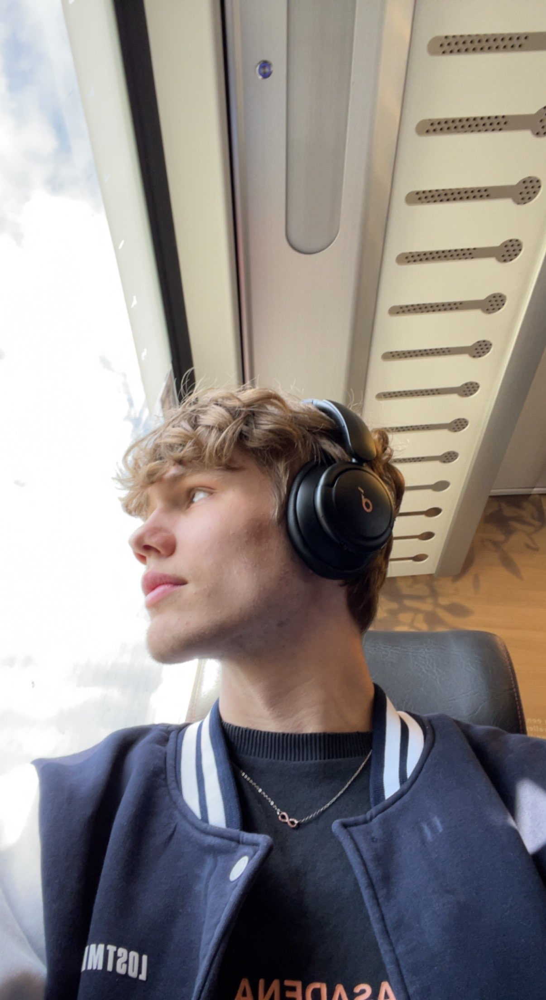
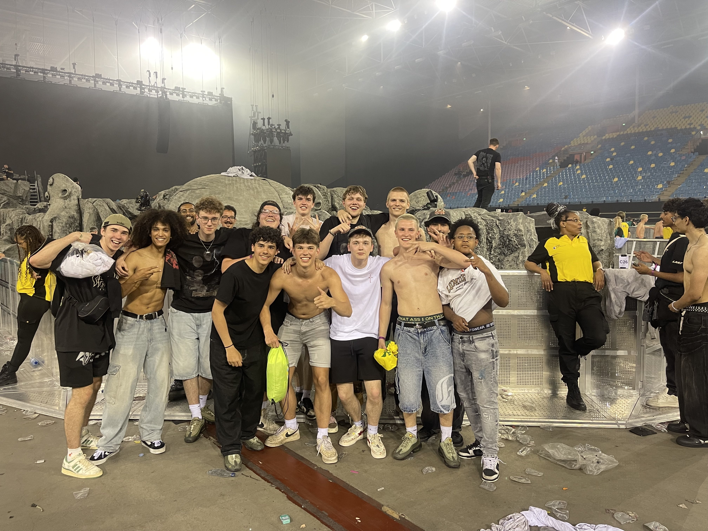
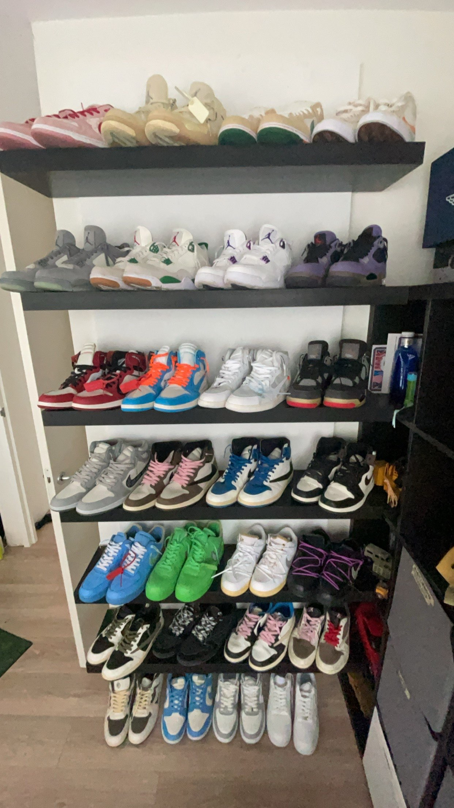
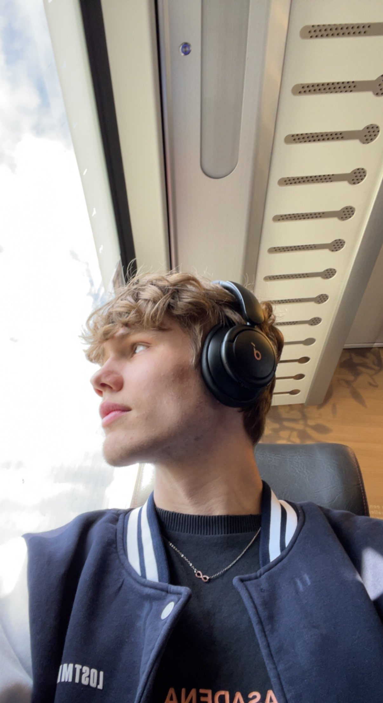
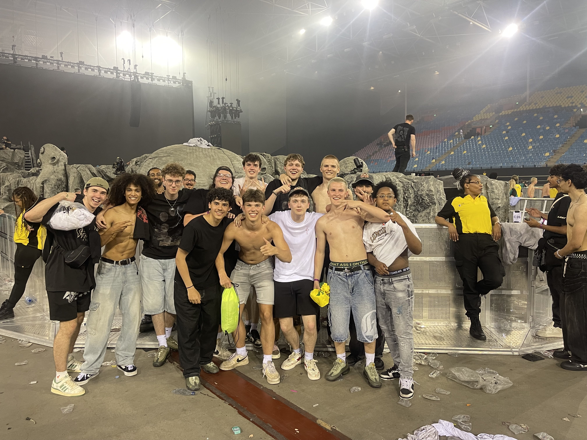
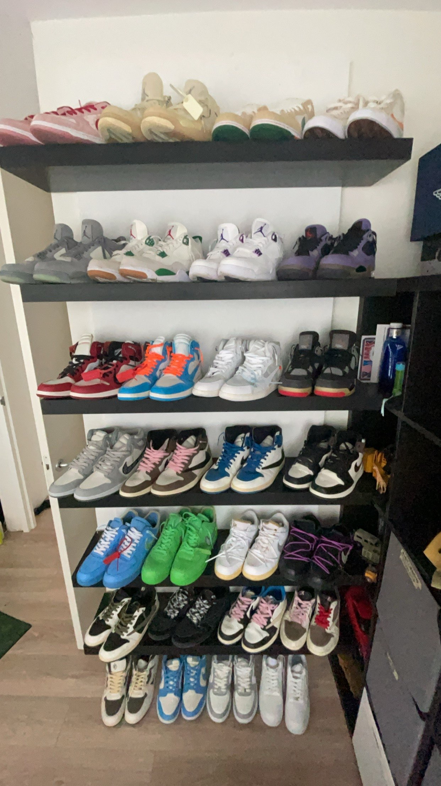

About Me
Developer met een Passie voor CSS en HTML
Als frontend developer ben ik gespecialiseerd in het bouwen van moderne en gebruiksvriendelijke websites. Mijn voorkeur
ligt bij het werken met CSS en HTML, omdat ik er echt van geniet om pixel-perfect designs om te zetten naar realiteit.
Samenwerken met anderen is een belangrijk aspect van mijn werk, en ik vind het fijn om in een team te opereren, waar ik
samen met collega's en klanten de beste resultaten kan bereiken.
Gaming en Fashion Enthousiasteling
In mijn vrije tijd ben ik een fervent gamer en houd ik me veel bezig met fashion. Ik vind het leuk om creatief bezig te
zijn, of dat nu achter een computer of met mode is. Af en toe stream ik mijn gamesessies met vrienden, en ik maak soms
ook video's die ik op YouTube zet. Het combineren van gaming en contentcreatie geeft me veel voldoening en is voor mij
een leuke manier om te ontspannen en mijn creatieve kant te laten zien.
 




